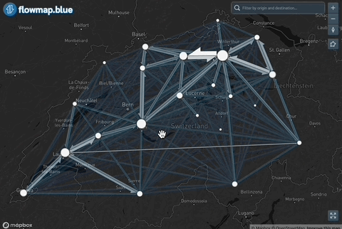
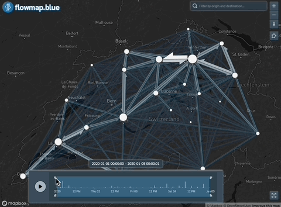

Flowmap.blue widget for R produces an interactive flow map representing numbers of movements between locations (origin-destination data).
Load the package to run the examples below.
For the backgorund maps to work, you also need to set up your Mapbox access token. You can obtain a free token by signing up at Mapbox.
# Set your Mapbox access token
Sys.setenv(MAPBOX_API_TOKEN = "YOUR_MAPBOX_ACCESS_TOKEN")Example 1: Visualizing Basic Flows
Next, load the example location and flow data:
Here is the structure of these data.frames:
str(locations)'data.frame': 26 obs. of 4 variables:
$ id : chr "ZH" "LU" "UR" "SZ" ...
$ name: chr "Zürich" "Luzern" "Uri" "Schwyz" ...
$ lat : num 47.4 47.1 46.8 47.1 46.9 ...
$ lon : num 8.65 8.11 8.63 8.76 8.24 ...
str(flows)'data.frame': 676 obs. of 3 variables:
$ origin: chr "ZH" "ZH" "ZH" "ZH" ...
$ dest : chr "ZH" "BE" "LU" "UR" ...
$ count : int 66855 1673 1017 84 1704 70 94 250 1246 173 ...Note: When using your own data, you need to shape it to the same structure with column names exactly as in these sample datasets.
Now, create a basic flow map:
flowmap <- flowmapblue(
locations = locations,
flows = flows,
mapboxAccessToken = Sys.getenv('MAPBOX_API_TOKEN'),
clustering = TRUE,
darkMode = TRUE,
animation = FALSE
)View the map:
flowmap
Save the map to an HTML file:
# Save the map to an HTML file
htmlwidgets::saveWidget(flowmap, file = "flowmap.html")Example 2: Flows with Date-Time
You can also visualize flows with date-time information. Here’s an example with time data included:
# Generate fake datetime for flows
flows$time <- seq(from = as.POSIXct("2020-01-01"), to = as.POSIXct("2020-01-05"), length.out = nrow(flows))
flowmap <- flowmapblue(
locations = locations,
flows = flows,
mapboxAccessToken = Sys.getenv('MAPBOX_API_TOKEN'),
clustering = TRUE,
darkMode = TRUE,
animation = FALSE
)
# View the map
flowmap
Example 3: Flows with Date Only
If your flow data includes only dates (without times), you can also visualize those:
# Generate fake dates for flows
flows$time <- seq(from = as.Date("2020-01-01"), to = as.Date("2020-06-01"), length.out = nrow(flows))
flowmap <- flowmapblue(
locations = locations,
flows = flows,
mapboxAccessToken = Sys.getenv('MAPBOX_API_TOKEN'),
clustering = TRUE,
darkMode = TRUE,
animation = FALSE
)
# View the map
flowmap
Integration with Shiny
If you want to integrate flowmapblue into a Shiny application, you can use the following functions:
# UI
flowmapblueOutput("flowmap", width = "100%", height = "600px")
# Server
output$flowmap <- renderFlowmapblue({
flowmapblue(
locations = ch_locations,
flows = ch_flows,
mapboxAccessToken = Sys.getenv('MAPBOX_API_TOKEN'),
clustering = TRUE,
darkMode = TRUE,
animation = FALSE
)
})This provides a simple yet powerful way to visualize flows in an interactive web application.
With these examples, you should be able to quickly get started with creating and customizing flow maps using the flowmapblue package in R. For more advanced options and features, refer to the package documentation and explore different settings as needed.